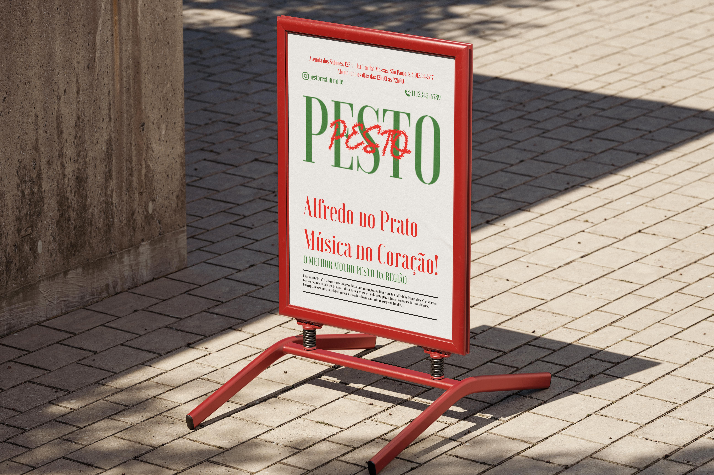
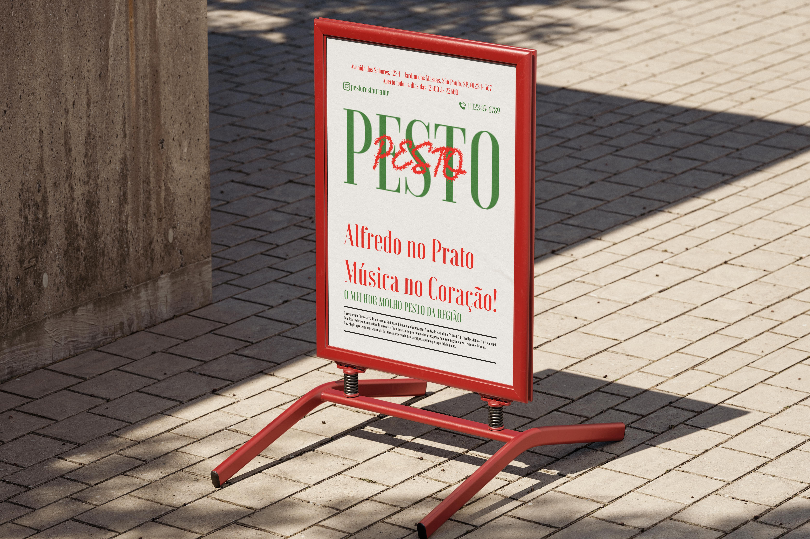

Sobre o Pesto
O restaurante "Pesto", criado por Johnny Guitarra e Jotta, é uma homenagem à amizade e ao álbum "Alfredo" de Freddie Gibbs e The Alchemist. Com foco exclusivo na culinária de massas, o Pesto destaca-se pelo seu molho pesto, preparado com ingredientes frescos e vibrantes. O cardápio apresenta uma variedade de massas artesanais, todas realçadas pelo toque especial do molho.
O ambiente é acolhedor e decorado com referências musicais, criando uma atmosfera perfeita para desfrutar de boa comida. As noites são animadas por playlists e, ocasionalmente, apresentações ao vivo, unindo gastronomia e musicalidade. No Pesto, cada refeição é uma experiência que celebra sabor, amizade e música, tornando-se um destino ideal para os amantes de massas e da boa companhia.